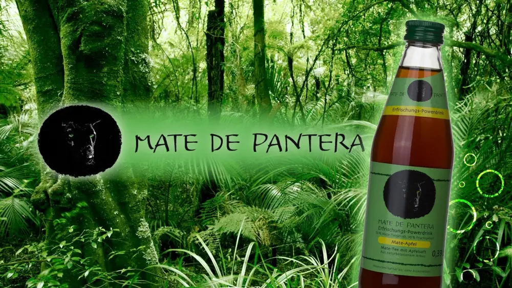
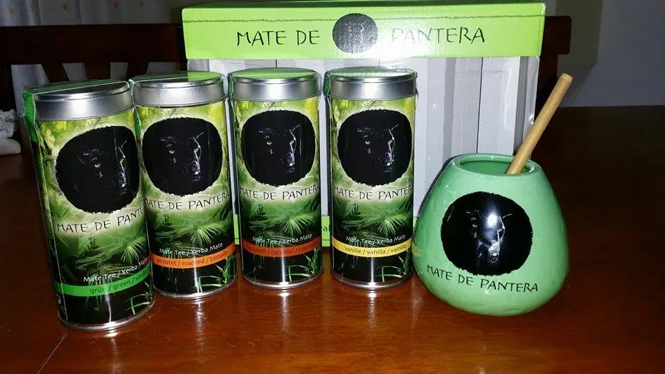
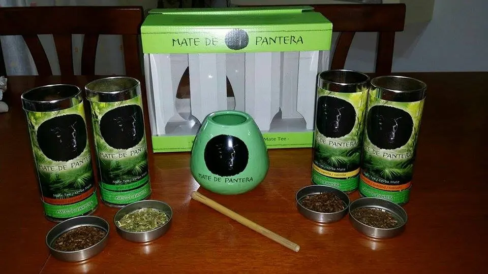
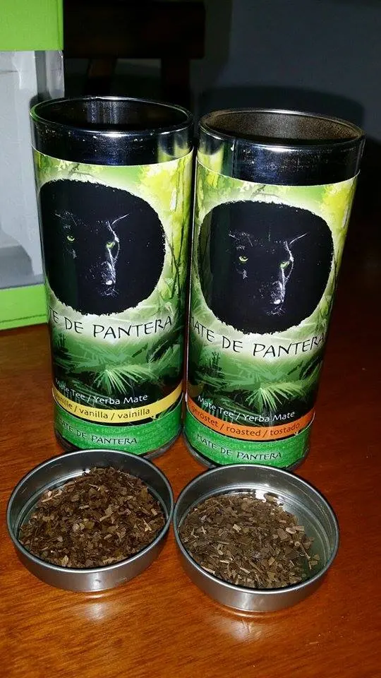
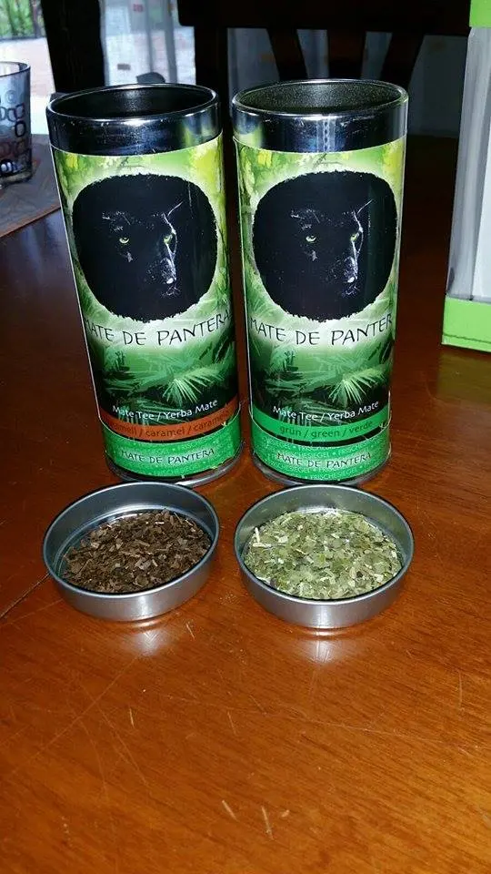
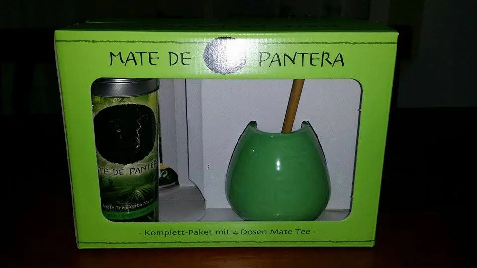
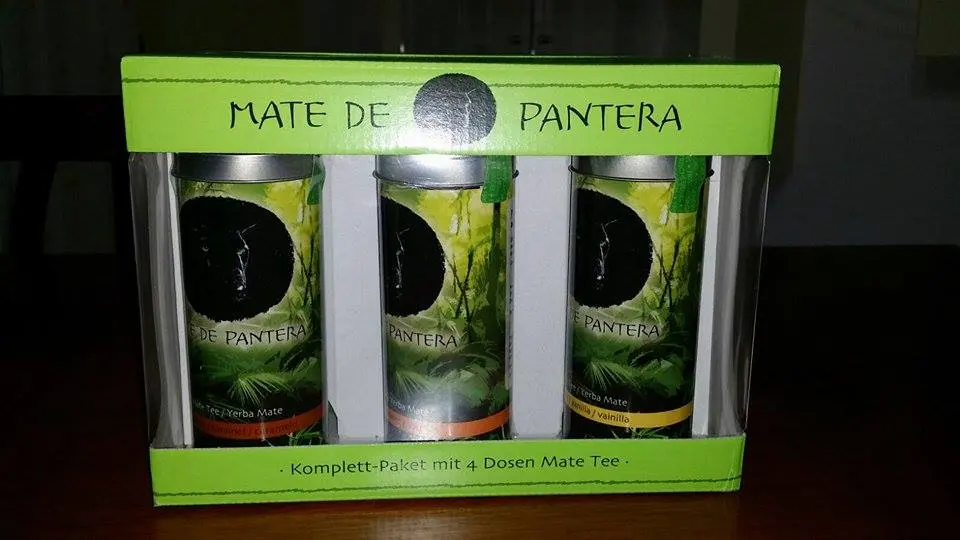

MATE' DE PANTERA - Thè
Salve a tutte.Oggi sono qui per parlarvi di un prodotto che ho vinto ad un concorso . .Il prodotto in questione è stato offerto da

In collaborazione con la pagina facebook che ha indetto il concorso che è:https://www.facebook.com/TesterPerAmici?fref=tsDetto ciò passo subito a parlarvi del thè.Il pacco arrivatomi conteneva- un coccio di ceramica (il contenitore per bere, in cui si prepara il tè),
- un Bombilla (tradizionale bambù-paglia)
- 4 giorni varietà di tè Mate porzioni
Mate tè verde (70g), Mate tè arrostito (70g ) Mate tè alla vaniglia (65g) Mate tè Carmelo (65g)

Il gusto devo dire che è buono. Al primo scorso però avevano un sapore strano da dubitare se avessi fatto bene tutti i passaggi ahahah. .
Per primo ho provato il tè verde, che è leggermente amaro. Si devono versare tutti i 70g che poi sarebbe la "dose giornaliera" completamente nel coccio e infuso con acqua abbastanza calda. (io vi consiglio per più riprese di metterne di meno tanto nel barattolo c'è molto prodotto).


La varietà caramello e vaniglia li sto testando ora ma sono buoni. Ovviamente l'acqua non deve essere bollente ma ben calda sia chiaro. A primo impatto vi assicuro che sarà amaro, ma più bevete durante il giorno più il gusto sarà gradevole. Nel caso in cui riterrete che il sapore sia ancora un pò troppo amaro per voi mettete un pò di zucchero e il gioco è fatto. Ve li raccomando anche per sostituire il caffè, tanto si sa anche il thè contiene caffeina quindi facilmente sostituibile, poi ottimo per il metabolismo che diventa anche un depurativo.

Beh, che dire, contenta di aver provato questi thè e li consiglio a tuttiIl loro sito è: http://www.matedepantera.com/La loro pagina facebook: https://www.facebook.com/MatedePantera?ref=ts&fref=tsLa pagina che mi ha dato il piacere di provare questo bel prodotto è Testerperamici :https://www.facebook.com/TesterPerAmici?fref=ts
Io vi lascio un gran bacio alla prossima